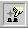

Pomni: znotraj tega okna nastavljamo glavo in nogo listov, kakor tudi barvo ozadja. Nekatere izbire so enake kot so bile v postopku prilagajanja celic, zato ne bodo razložene še enkrat.
provided by the OpenOffice.org Documentation Project
A. -- na celici
Odpri Slogovnik:
izberi Oblika– Slogovnik,
ali pritisni F11,
ali klikni na ikono v Funkcijski vrstici.
Znotraj okna Slogovnika je nekaj pripravljenih oblik oz. stilov. Za prilagoditev po lastnih potrebah izberi stil Privzeto:
izberi stil Privzeto
desni klik miške, da se odpre padajoèi meni
izberi Spremeni...
To okno vsebuje vse kategorije potrebne za oblikovanje celic: pisave, poravnave
ali števil. Ravno zadnja se uporablja najpogosteje.
Oglejmo si nastavitve Valuta v zavihku Števila. Tukaj lahko izbiramo s katero valuto bomo delali. Spodaj vidimo izgled zavihka Števila ob izbiri kategorije valuta:
Vidimo izbiro Oblikovanje. Tukaj izberemo valuto, ki je na primeru prikazana
desno od izbirnega okna. Standardni jezik je tisti, ki smo ga izbrali v globalnih
moµnostih.
Pod 'Možnosti' izberemo število decimalnih mest kot želimo, da se izpisujejo, barvo negativnih števil,..
Ko smo izbrali vse svoje izbire potrdimo svojo izbiro s klikom na gumb V redu. Sedaj se vse celice, ki so bile oblikovane s stilom Privzeto, preoblikujejo v skladu z novim stilom Privzeto.
Opomba : Èe za
oblikovanje celice noèemo spreminjati že obstojeèega stila, lahko celico izberemo,
in nato v izbiri po desnem kliku na Privzeto izberemo Nov... Na ta naèin
lahko izdelamo svoj stil. Nato ponovimo enaka dejanja kot prej, ko smo spreminjali
stil Privzeto. Na koncu novi stil samo še poimenujemo v izbiri Knjižnica
in potrdimo s klikom na gumb V redu da se izpiše v oknu Slogi celic.
Da uporabimo izbrani stil na celici, postavimo utripaè (kurzor) v izbrano celico,
nato pa dvokliknemo želeni stil v oknu Slogi celic.
B. -- na strani
Vse se zopet dogaja znotraj Slogovnika.
Z miško kliknimo drugo ikono na vrhu okna Slogi strani, da pridemo do izbire 'Slogi strani'
Desno kliknemo na slog 'Privzeto' in izberemo Spremeni...
Pogovorno okno, ki se odpre ima nekaj veè možnosti prilagajanja kot pri oblikovanju celic:
Pomni: znotraj tega okna nastavljamo glavo in nogo listov, kakor tudi barvo
ozadja. Nekatere izbire so enake kot so bile v postopku prilagajanja celic,
zato ne bodo razložene še enkrat.
Namesto tega pa si raje oglejmo izbiro Stran:
Oglejmo si še eno od izbir: List.

Informacije na tem oknu so jasno razvidne, razen v polju Merilo, ki je
nekoliko skopo:
'Zmanjšaj/poveèaj izpis' omogoèa poveèati ali zmanjšati velikost tiskarske slike listov.
'Prilagodi izpis številu strani' pa omogoèa, da natanko doloèimo na koliko strani se bo preglednica natisnila. Velikost listov se bo nato samodejno prilagodila izbrani številki.
Pozor: da lahko uporabimo to možnost je potrebno oznaèiti skupino celic, ker funkcija ni namenjena oblikovanju ene ali dveh celic temveè veèjega obsega celic.
Do izbire za samooblikovanje
pridemo tako, da izberemo meni Oblika in nato izbiro Samooblikovanje,
ki
pa je vidna le, èe je izbrana skupina velic. Drugi naèin pa je izbira ikone ,
ki jo najdemo v orodni vrstici na levi strani zaslona.
,
ki jo najdemo v orodni vrstici na levi strani zaslona.
Neverjetno! Kot, da bi bilo celotno oblikovanje preglednic opravljeno samodejno!
:-)
Sedaj nam ostane le še izbrati slog, ki nam je všeè!
Lahko pa tudi izdelamo lasten slog (glej gumb Dodaj... na desni strani) ali ga izbrišemo, èe ugotovimo, da ga ne rabimo!
S klikom na Dodatno>> pridemo do dodatnih možnosti oblikovanja. Èe jih spremenimo, to takoj opazimo na sliki tabele v sredini okna Samooblikovanje.
Pomni: Èe želimo razveljaviti oblikovanje z izbiro Samooblikovanje, izberemo obmoèje kjer smo samooblikovanje uporabili, desno kliknemo in izberemo možnost 'Privzeto'.
Sestavljene so iz slogov celic, katerih nastavitve so doloèene, vendar se slogi dajo prilagajati.
Da bi razumeli njihovo delovanje:
Da bi lahko teme uporabljali, se je nekaj o njih še potrebno nauèiti, vendar to ni težko!
Autor: Sophie Gautier
Zahvala: Richard Holt, prvi lektor in sodelavca OOo
Intgr by: Gianluca Turconi
Zadnja spremeba:
18 Februar 2002
Prevedeno:
23 Avgust 2002
Stik: www.agenda.si
Prevedel: Roman Bobnariè